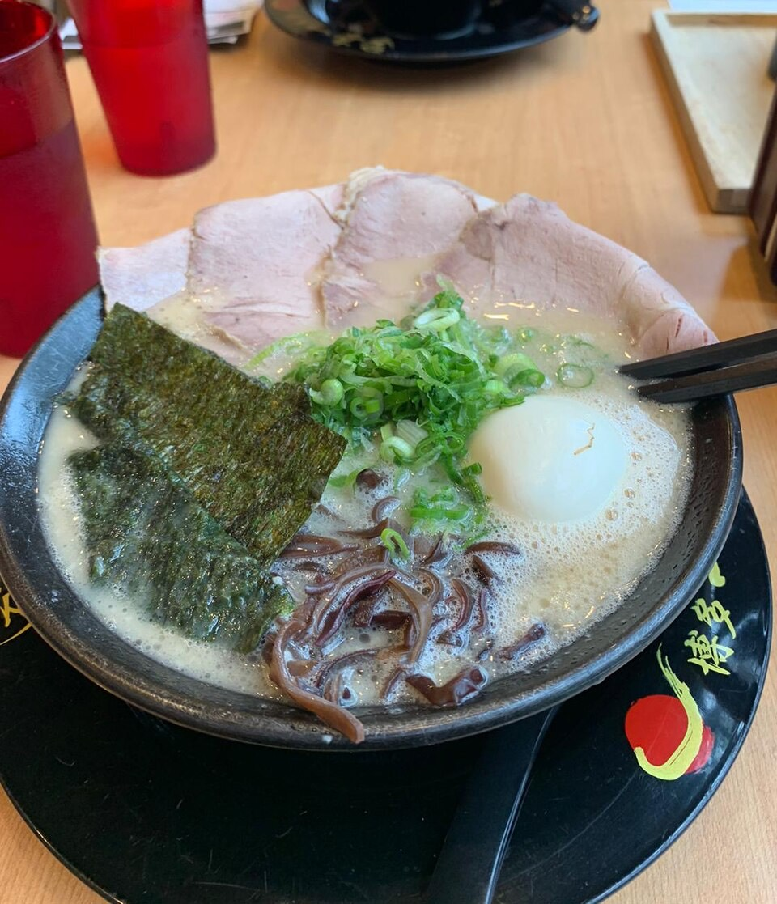

No. 1
Shiro tonkotsu 白
Pork bone broth boiled hard for eighteen hours until it turns white and coats the spoon. Thin straight Hakata noodles, so they cook in ninety seconds.
- Broth
- Pork bone, emulsified
- Noodle
- Thin, straight
- On top
- Chashu belly, ajitama, wood ear, nori
Richness
$22